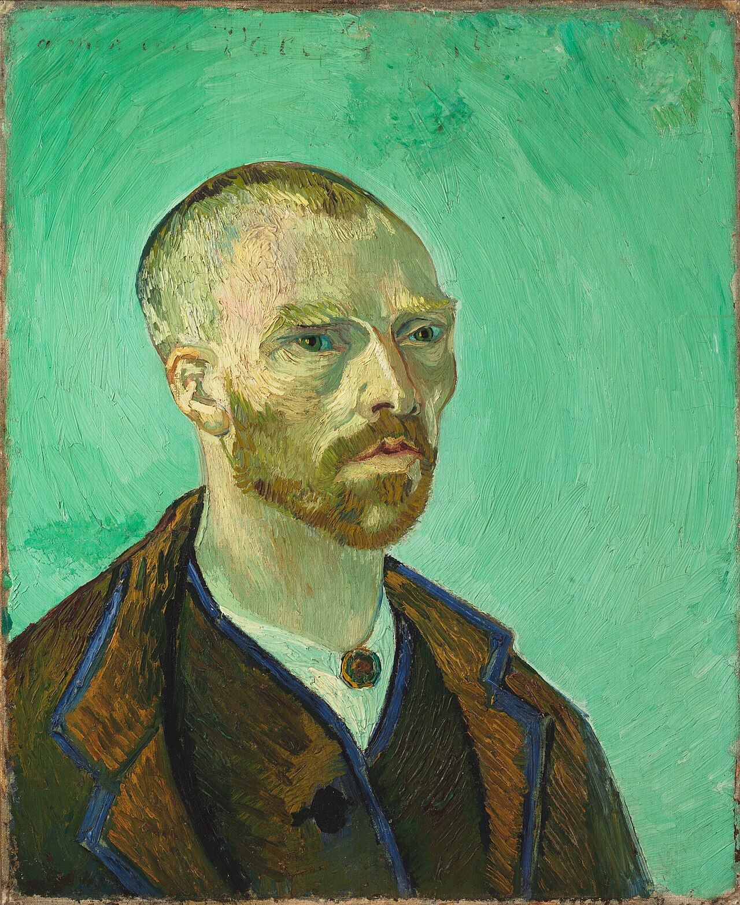

Fig. 1 — Vincent van Gogh, Self-Portrait Dedicated to Paul Gauguin, 1888, olio su tela, 61,5 × 50,3 cm. Harvard Art Museums, Cambridge (MA).
Van Gogh a Theo, 5 ottobre 1888 (lettera 697), sullo scambio di autoritratti con Gauguin. Fonte: Van Gogh Letters Project — traduzione inglese.
| Autore | Vincent van Gogh |
|---|---|
| Data | 1888 |
| Tecnica | olio su tela |
| Dimensioni | 61,5 x 50,3 cm |
| Catalogo | F476/JH1581 |
| Collezione | Harvard Art Museums, Cambridge (MA) |
| Luogo di creazione | Arles |
L'opera nacque nell'ambito di uno scambio culturale e artistico tra i due pittori, poco prima che Gauguin raggiungesse Van Gogh nella famosa "Casa Gialla": in cima al dipinto, Van Gogh inserì una scritta esplicita per suggellare l'amicizia: "Al mio amico Paul Gauguin". L'autore decise di ritrarsi con i capelli rasati a zero e i lineamenti severi, e proprio in una lettera al fratello Théo, spiegò di aver voluto dare al proprio volto le sembianze di un monaco buddista (un "bonzo"), simbolo di una vita interamente consacrata all'arte e priva di desideri materiali. Lo sfondo è dipinto con un colore verde-acqua chiaro e uniforme, e la totale assenza di ombre e dettagli stacca nettamente la figura, conferendole un'atmosfera spirituale e quasi mistica. L'uso di contorni marcati e di campiture di colore piatte riflette la profonda ammirazione di Vincent per le stampe giapponesi, che influenzarono fortemente lo stile sviluppato ad Arles.
Arricchimento — record di autorità
File collegati
Risorse esterne